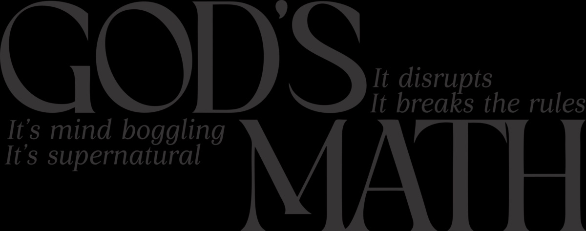

What an honor it will be to teach you about God's Math. As recipient and heir of God's Math I realized that many hadn't tapped into it. I want to be the first to walk you through the supernatural experience of God being a mathematician in your life.
Before you read another word, listen first. Some things land different when you hear the conviction behind them.
You first need to abandon everything you learned in school. Your man-made calculator won't be necessary, and your human logic is not invited.
Isaiah 55:8–9As a part of your inheritance there are some perks you qualify for that will ensure your life is set apart from others. God's Math is one of those perks.
God is simple, and He doesn't need much to have a performance of His math in your life. To activate His math, all you need is two.
When studying Ecclesiastes 4:9, it reads "two are better than one." I researched the Greek definition of better and saw it was defined as: prosperity, wealth, precious, favor, benefit.
One can chase a thousand, but two can put ten thousand to flight. The energy required to chase something is a vast difference from simply adding one person to put ten thousand to flight. In the Bible, flight means to cause to disappear.
A decade ago I was filled with uncertainty, my life in shambles. Once I came into agreement with what God had designed for my life, I began to see God's Math reflected in ways that only God Himself can take credit for.
So good. I definitely put "God's Math" as my screensaver so I can see it everyday.
It disrupts. It breaks the rules. It's mind-boggling. It's supernatural.
It is designed to disrupt patterns and be the example to the world that the cycle ends with you.
It's outside of standard education. Multiplication as you know it must be redefined.
When you try to figure it out, you simply cannot. Because it makes no sense.
It attaches to your natural and adds the super that is not of this world. It's Heavenly. It's favor. It's Glory.
Come into agreement and stand on it. Grab your God's Math gear today and carry the revelation with you.
Grab the GearAn incredible 10-part series where you can take the principles of God's Word and go deeper into adding God's Math to your life. Be sure to download the workbook that coincides with each training so you can be a doer and not just a reader.
Watch the Training